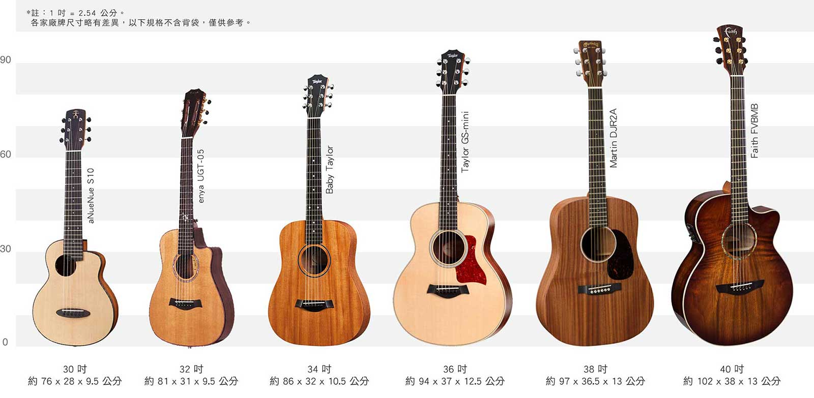
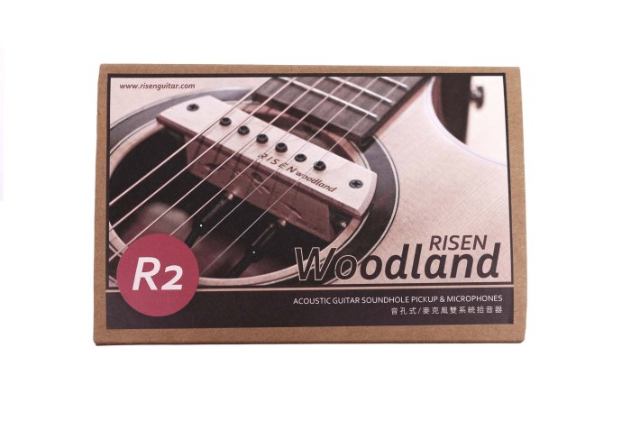
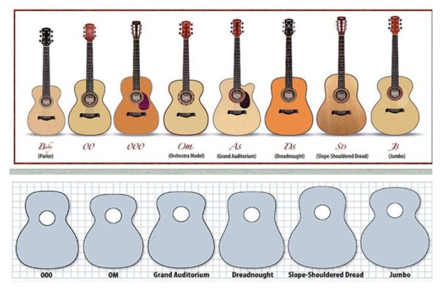

一、該選擇【什麼尺寸】的吉他?
市面上的吉他有相當多的尺寸，首先我們要先了解吉他尺寸使用的是什麼度量單位，才不會店員或老師在講解的時候，聽得一頭霧水。吉他所使用的度量單位是英吋(inch)，一吋是 2.54 公分，使用的符號為(”)吉他最常見的尺寸是 40 吋和 41 吋，另外 34 吋至 38 吋通常稱為"旅行吉他"或 "baby guitar" 。

因為吉他有非常多的尺寸，所以初學者在挑選吉他時，經常會困擾不知道該選擇什麼樣的 Size，或是會認為自己手比較小就適合小尺寸的吉他 ；其實什麼身高的人適合什麼樣的吉他並沒有一個標準。但市面上最常見的吉他尺寸為 40 吋及 41 吋。
二、【古典吉他】與【民謠吉他】的差異在哪?
很多初學者在選擇第一把吉他時，經常會分不清古典吉他與民謠吉他的差異，造成最後買錯吉他， 雖然這兩種吉他只差了兩個字，但嚴格說起來，這兩個是完全不同性質的樂器喔。
通常從外觀判斷，古典吉他通常會比民謠吉他小，古典吉他常見的尺寸為 39 吋(約 99.6 公分)，民謠吉他常見則為 41 吋(約 104.14 公分)，且古典吉他握柄較寬，使用的弦線為尼龍材質，下面三弦 通常看起來像是透明的，音色較為溫暖，民謠吉他使用的弦線為鋼弦，音色較為脆亮。
三、什麼是【拾音器】?
拾音器簡單來說就是吉他的麥克風，拾音器有許多形式，常見有麥克風收音式、琴橋式、拾音棒感應式、貼片式，最主要的用途是為了擴音。

有些比較進階的玩家有錄音需求，也可以透過拾音器搭配錄音軟體以及錄音介面做錄製，目前市面上的拾音器種類繁多，有些只有將聲音擴大的功能，有些可以調整低、中、高音，甚至加入效果。
四、吉他有哪些【桶身】?
吉他的桶身會影響其共鳴，各家廠牌對於吉他桶身的命名都不一樣，但最常見的幾種桶身，通常有 D 桶 (Dreadnought) 、 GC 桶 (Grand Concert) 、 GA 桶 (Grand Auditorlum) 、 JM 桶 (Jumbo) 、 GS 桶 (Grand Symphony) 、OM 桶 (Orchestra Model) 。

以上桶身的差異，最直接的差別就是抱起來的感受不一樣；還有不同的桶身，音色也會差很多。一般來說，演奏家會依照自己最常演奏的音樂型態， 來選擇相對應適合的桶身。我們就來認識一下不同桶身的特色在哪裡吧！
| D 桶 (Dreadnought) | 寬腰身、大音量為 D 桶的特性，如果您是喜歡自彈自唱的朋友，D 桶絕對是最適合您的選擇。 |
| GC 桶 (Grand Concert) | 小體積的琴身搭配缺角，如果您是 Finger Style 的演奏家，GC 桶將會帶給 您最佳的彈奏體驗。 |
| GA 桶 (Grand Auditorlum) | GA 桶也是較適合彈奏演奏曲的，但琴體較 OM 桶厚也較寬，擁有比 OM 桶更為紮實的音量。 |
| GS 桶 (Grand Symphony) | GS 桶上窄下寬，結合了 GA 桶內歛的高音，以及 D 桶渾厚的低音，不論是大力刷奏和弦或是輕柔的撥奏琶音，都能有相當好的音色表現。 |
| OM 桶 (Orchestra Model) | 外型近似葫蘆型，較 GA 桶輕薄，雖然音量較小，但內斂的高音以及 舒適的手感，也深受需多演奏家的喜愛。 |
| JM 桶 (Jumbo) | Jumbo 桶身的吉他體積非常大，擁有非常大的音量以及低頻渾厚紮實的特色。 |
五、新手適合什麼樣的吉他呢?
其實並沒有什麼吉他是最適合初學者使用的，曾老師建議初學的朋友，可以先上網多看一些文章，對吉他有初步的認識之後，再找身邊懂吉他的朋友一同到樂器行一起試琴。以目前吉他的製作工藝，其實技術都已經非常到位!
通常一把好的吉他，需要具備以下幾個特質 :
- 1. 握柄不會太寬，握起來舒服，琴衍(Fret)不刮手。
- 2. 不會有壤音以及打弦的聲音，吉他所有的不明雜音一般都稱為壤音，一把好的吉他，不應該有這些不明雜音的產生。
- 3. 必須具備 Truss Rod，所謂 Truss Rod 就是嵌在吉他柄裡面的一根調整桿，因為木頭會隨著氣候的變化以及溫濕度和弦線的拉力，造成琴柄的彎曲。
- Truss Rod 就是為了調整琴柄的曲度，通常一把好的吉他必須要具備 Truss Rod，如果沒有 Truss Rod 的吉他，完全不需要考慮。
- 4. 弦鈕的齒輪比不要太低，齒輪比即齒輪的密度，通常較低齒輪比的吉他弦鈕，會容易造成音準上的偏差，且調音也較為不易，通常初學者挑吉他往往只在意外觀好不好看，這種細節會影響之後的學習意願，因此一把好的吉他，從調音就能判斷的出來。